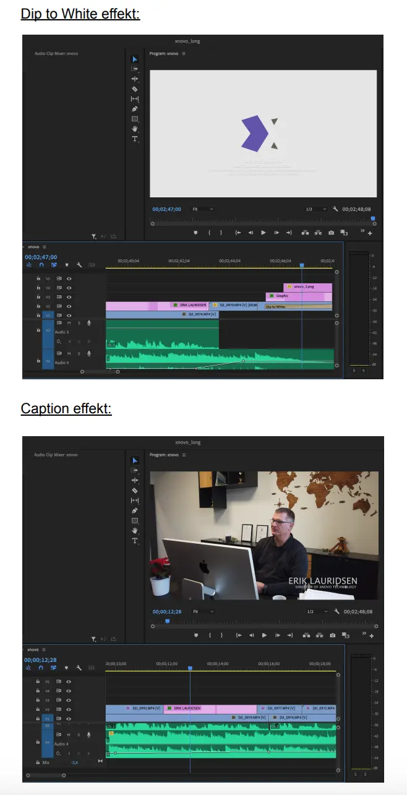

I løbet af første semester dykkede vi ind i videoredigering ved at benytte os af programmet Premiere Pro. Vi begyndte med præfabrikerede klip som øvelse, før vi tog fat på egne filmprojekter. I vores afsluttende opgave fokuserede vi på at forbedre brugeroplevelsen på en valgfri hjemmeside. Grupperne blev dannet gennem "The Quik and Dirty method," hvor deltagerne positionerede sig i en trekant baseret på deres nuværende og ønskede roller.
Min rolle kombinerede færdigheder inden for teamarbejde (People-oriented roles) og formgivning (Action-oriented roles), hvilket styrkede mine samarbejdsevner og handlekraft. Teamcanvas blev strategisk udnyttet til at optimere komplementære kompetencer og roller i gruppen.
En central udfordring ved gruppearbejde for mig lå i at koordinere fritid og skole, som passede alle i gruppen. En anden udfordring for mig var, at det faldt mig lidt for naturligt at indtage 'teamworker'-rollen, da jeg som person er konfliktsky. Det resulterede i, at jeg måske har været medløber det meste af temaet. Det vil jeg tage med mig til næste semester og prøve, at gå mere ind i en anden rolle for at udvikle mig mere på det punkt og ikke altid være medløber.
Projektet involverede et virksomhedsinterview og filmproduktion, efterfulgt af klipning til en omfattende re-designproces af virksomhedens hjemmeside. Vi anvendte en programmet Premiere Pro og færdigheder, som vi har lært i løbet af semesteret.
Er du mere interesseret i yderligere detaljer? Er er linket til procesdokumentationen:
Link til ProcesdokumentationBrugertestning, herunder 5-sekunders test, heuristisk test og BERT-test, blev udført for at informere redesignet. Udfordringen ved at have nære relationer til testpersonerne påvirkede resultaterne, hvilket fremhævede behovet for mere objektive testpersoner i fremtidige projekter.
I idéudviklingsfasen anvendte vi forskellige metoder som ideation, crazy 8's, solution sketch, sitemap og prototype. Moodboards og stilestile blev også udarbejdet for at sikre, at redesignet afspejler virksomhedens værdier og målgruppe på bedste vis.
Lighthouse-tests blev udført for at validere vores CSS, dokumenteret med fejlfrie resultater. Dog påvirkede vores venlige relationer testresultaterne, hvilket understregede behovet for mere detaljerede brugerinstruktioner.
Samlet set repræsenterer dette projekt en praktisk forståelse af videoredigering, brugergrænseflader, idéudvikling og validering af webdesign. Disse erfaringer har været afgørende for udviklingen af mine kompetencer og udgør et fundament for fremtidige projekter.